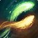
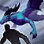
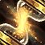
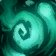

恩护唤魔师 PvP 判断训练器
这版本唯一要记住的一句
恩护不是血掉了再补。
先用回响 与持续治疗预付下一拍，危险来时才有时间做第二件事。
先用
为什么

回响必须在治疗之前顺序就是强度▸Icy Veins 把

短射程不是让你站死近战堆机动替你伸长治疗半径▸
大牌回答不同时间方向提前、当下、事后分开▸该不该交大牌
三个时钟
预付时钟回响 → 下一发治疗▸
持续伤害先维护

机动时钟前压前先看退路▸梦游与伤害能帮队伍收人，但每次前压前先留
三种大牌时钟未来、预存、过去▸
本版定盘
英雄天赋：时空守卫 Chronowarden46/50，塑焰者 4/50▸
top50 中时空守卫占 92%。这说明当前主流进一步强化时间系与机动，但仍保留 4 名塑焰者，不写成唯一解。
PvP 天赋：两格定盘，一格按阵容废灵遮罩 50/50 · 翡翠交融 50/50▸